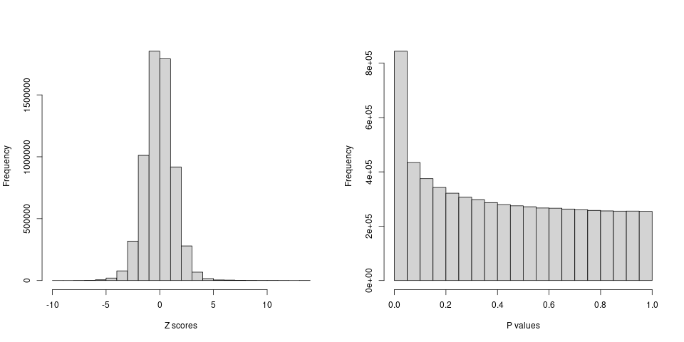
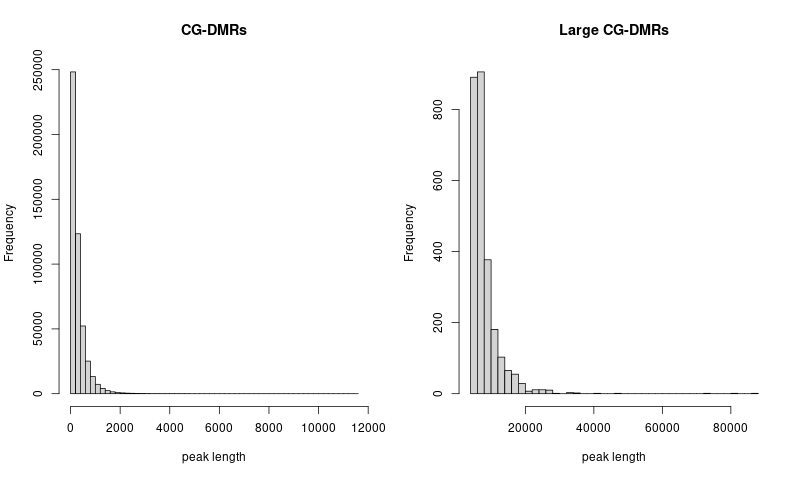
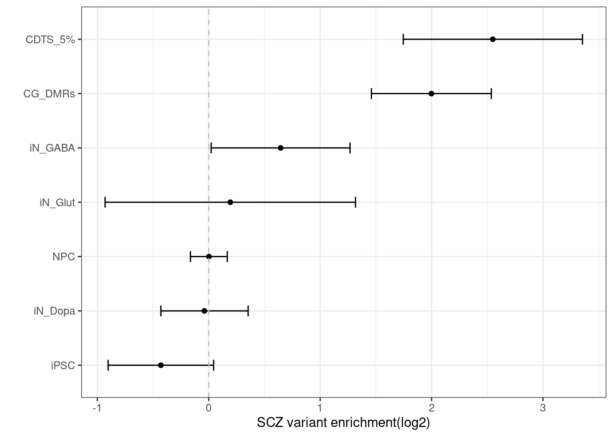
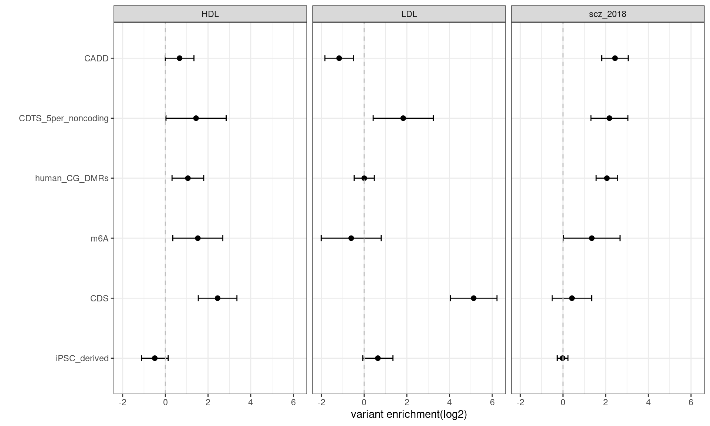
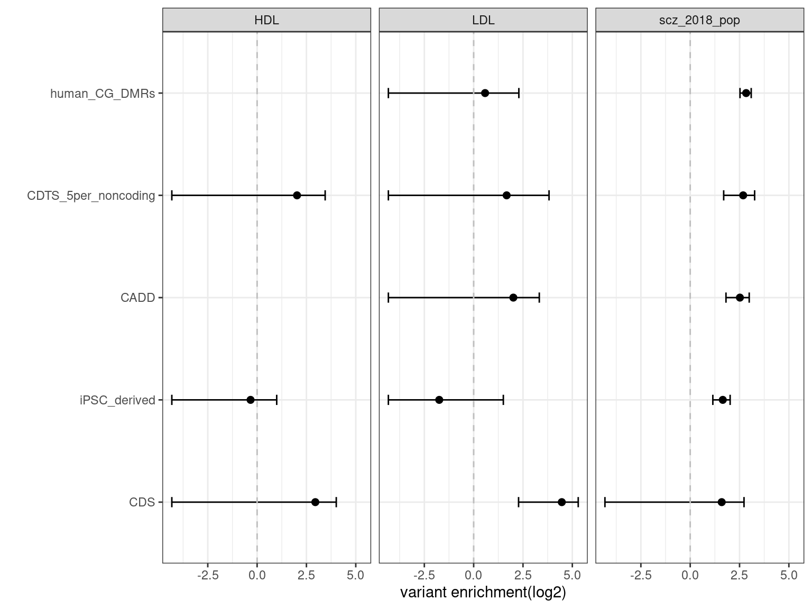
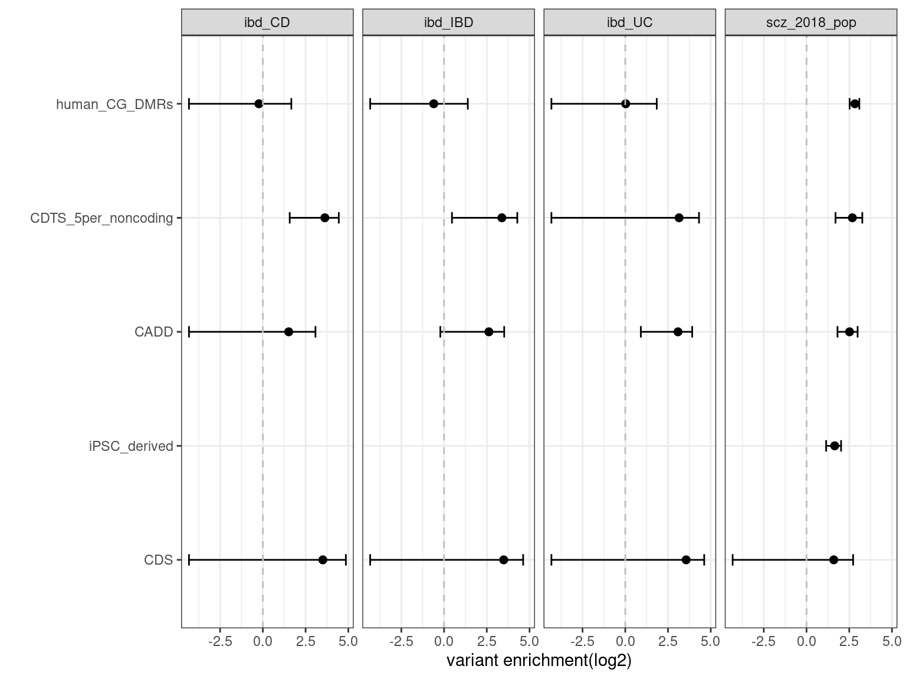

results
Last updated: 2021-06-11
Checks: 6 1
Knit directory: funcFinemapping/
This reproducible R Markdown analysis was created with workflowr (version 1.6.2). The Checks tab describes the reproducibility checks that were applied when the results were created. The Past versions tab lists the development history.
Great! Since the R Markdown file has been committed to the Git repository, you know the exact version of the code that produced these results.
Great job! The global environment was empty. Objects defined in the global environment can affect the analysis in your R Markdown file in unknown ways. For reproduciblity it's best to always run the code in an empty environment.
The command set.seed(20210404) was run prior to running the code in the R Markdown file. Setting a seed ensures that any results that rely on randomness, e.g. subsampling or permutations, are reproducible.
Great job! Recording the operating system, R version, and package versions is critical for reproducibility.
Nice! There were no cached chunks for this analysis, so you can be confident that you successfully produced the results during this run.
Using absolute paths to the files within your workflowr project makes it difficult for you and others to run your code on a different machine. Change the absolute path(s) below to the suggested relative path(s) to make your code more reproducible.
| absolute | relative |
|---|---|
| ~/projects/funcFinemapping/output/scz_lipid_joint_enrichment.png | output/scz_lipid_joint_enrichment.png |
| ~/projects/funcFinemapping/output/scz_bmi_joint_enrichment.png | output/scz_bmi_joint_enrichment.png |
| ~/projects/funcFinemapping/output/scz_immune_joint_enrichment.png | output/scz_immune_joint_enrichment.png |
Great! You are using Git for version control. Tracking code development and connecting the code version to the results is critical for reproducibility.
The results in this page were generated with repository version f1a99e0. See the Past versions tab to see a history of the changes made to the R Markdown and HTML files.
Note that you need to be careful to ensure that all relevant files for the analysis have been committed to Git prior to generating the results (you can use wflow_publish or wflow_git_commit). workflowr only checks the R Markdown file, but you know if there are other scripts or data files that it depends on. Below is the status of the Git repository when the results were generated:
Ignored files:
Ignored: analysis/results.nb.html
Untracked files:
Untracked: analysis/feedback.Rmd
Untracked: analysis/notes.Rmd
Untracked: data/torus_joint_enrichment.est
Untracked: output/joint_history/
Untracked: output/scz_bmi_joint_enrichment.png
Untracked: output/scz_immune_joint_enrichment.png
Untracked: output/scz_lipid_joint_enrichment.png
Unstaged changes:
Modified: analysis/biology_bkg.Rmd
Modified: analysis/index.Rmd
Modified: analysis/method_bkg.Rmd
Modified: data/torus_enrichment_ambigousSNPs.est
Note that any generated files, e.g. HTML, png, CSS, etc., are not included in this status report because it is ok for generated content to have uncommitted changes.
These are the previous versions of the repository in which changes were made to the R Markdown (analysis/results.Rmd) and HTML (docs/results.html) files. If you've configured a remote Git repository (see ?wflow_git_remote), click on the hyperlinks in the table below to view the files as they were in that past version.
| File | Version | Author | Date | Message |
|---|---|---|---|---|
| Rmd | f1a99e0 | Jing Gu | 2021-06-11 | add m6A features |
| html | 6d08f25 | Jing Gu | 2021-05-26 | Build site. |
| Rmd | c31370b | Jing Gu | 2021-05-26 | run s-LDSC |
| html | b06a720 | Jing Gu | 2021-05-17 | Build site. |
| Rmd | a5077fc | Jing Gu | 2021-05-17 | check CDTS bins in non-coding regions |
| html | a9bf732 | Jing Gu | 2021-05-17 | Build site. |
| Rmd | 0bf590d | Jing Gu | 2021-05-17 | check CDTS bins in non-coding regions |
| html | 960b17a | Jing Gu | 2021-05-17 | Build site. |
| Rmd | add87a5 | Jing Gu | 2021-05-17 | check CDTS bins in non-coding regions |
| html | 1742eb8 | Jing Gu | 2021-05-04 | Build site. |
| Rmd | a29395c | Jing Gu | 2021-05-04 | exmain DMR feature |
| html | a7da05c | Jing Gu | 2021-04-28 | Build site. |
| Rmd | d4f860e | Jing Gu | 2021-04-28 | updated tables |
| html | 92c58f9 | Jing Gu | 2021-04-28 | Build site. |
| Rmd | 588a9b3 | Jing Gu | 2021-04-28 | updated tables |
| html | 14315fd | Jing Gu | 2021-04-28 | Build site. |
| Rmd | 2a16e42 | Jing Gu | 2021-04-28 | compare CDTS with other annotations |
| html | 621b19b | Jing Gu | 2021-04-22 | Build site. |
| Rmd | 16ea9f9 | Jing Gu | 2021-04-22 | compare annotations |
| html | bbfe1d4 | Jing Gu | 2021-04-22 | Build site. |
| Rmd | 4dd58d7 | Jing Gu | 2021-04-22 | compare annotations |
| html | 540e287 | Jing Gu | 2021-04-21 | Build site. |
| html | e597d4e | Jing Gu | 2021-04-21 | Build site. |
| Rmd | b93bab1 | Jing Gu | 2021-04-21 | compare with other conservation annotations |
| html | 491ca5c | Jing Gu | 2021-04-14 | Build site. |
| Rmd | 1ed77cb | Jing Gu | 2021-04-14 | characterize annotations |
| html | 1ed77cb | Jing Gu | 2021-04-14 | characterize annotations |
| html | ba251cb | Jing Gu | 2021-04-14 | Build site. |
| Rmd | 76883f1 | Jing Gu | 2021-04-14 | characterize annotations |
| html | 76883f1 | Jing Gu | 2021-04-14 | characterize annotations |
| html | 1a76b29 | Jing Gu | 2021-04-06 | Build site. |
| Rmd | ae12e8a | Jing Gu | 2021-04-06 | evaluate sequence constraints |
| html | 752cb39 | Jing Gu | 2021-04-05 | Build site. |
| html | f1c5950 | Jing Gu | 2021-04-05 | Build site. |
| html | d16a5e0 | Jing Gu | 2021-04-05 | Build site. |
| Rmd | 6f7214b | Jing Gu | 2021-04-05 | edit index page |
Fine-mapping with functional annotations as priors has shown improved results in identifying causal variants. This project is to evaluate the utility of novel annotation features and adopt ones that can improve fine mapping results.
Evaluation
GWAS summary statistics
Schizopherenia - Pardinas et al., 2018
- 40675 cases and 64643 controls
- CLOZUK sample + PGC sample (independent)
- 179 independent GWAS significant SNPs mapped to 145 independent loci
- SNPs were imputed using a combination of the 1KGPp3 and UK 10K datasets.
- SNPs were filtered by NFO > 0.6 and MAF > 0.01
- LD-score regression analysis: An LD reference was generated from 1KGPp3 after restricting this dataset to strictly unrelated individuals and retaining only markers with MAF > 0.01.
GWAS QC Procedures
- Current procedures was based on Alan's finemappeR pipeline
- Criteria for filtering gwas SNPs
- Remove all non-biallelic SNPs
- Remove all SNPs with strand-ambiguous alleles (SNPs with A/T, C/G alleles)
- Removed SNPs without rs IDs, duplicated rs IDs or base pair position.
- Removed SNPs not in the reference panels
- Removed SNPs whose base pair positions or alleles doesn’t match the reference panels
- Removed all SNPs on chromosome X, Y, and MT
After filtering, there are around 6 million variants remained. 
Features
- Sequence constraints:
- context-dependent tolerance scores(CDTS) in percentiles
- A score was computed for each 10bp bin in the genome.
- The lower the score is, the more intolerant to variation is the bin.
- Prediction of 3D genome folding from DNA sequences:
- deep learning approach - train Hi-C/Micro C and 1D DNA sequences and then predict on any DNA sequence
- an example shown for rs339331 !comparison in contact maps surrounding rs339331 between ref and alt alleles
{kind=link}
Procedures
- GWAS summary statistics was pre-processed to remove sex chromosomes, indels, ambiguous and duplicated SNPs.
- Currently, genotypes from 1kg European samples are used to compute LD between SNPs.
- SNPs in GWAS summary statistics were matched with the reference panel and assigned to in total 1687 independent LD blocks.
- Run TORUS to perform genome-wide enrichment analyses.
All variants were catogrized into whether or not they occur in genomic bins with CDTS up to 1 percentile or 5 percentile.
Examine the CDTS feature
Check the percent of constrained sequences that overlaps with open chromatin regions in brain
- Overlaps between two sets of genomic features were identified using
bedtools intersect. The constrained sequences were counted to be overlapped when at least 20%(>=2 bp) intersect with peaks called from ATAC-Seq profiles. No reciprocal option used here due to the much shorter length of CDTS sequence.
| b_cell | iN_Dopa | iN_GABA | iN_Glut | iPSC | NPC | t_cell | |
|---|---|---|---|---|---|---|---|
| CDTS_1% | 11.3% | 46.9% | 55.6% | 45.4% | 62.2% | 44.2% | 9.4% |
| CDTS_5% | 3.5% | 19% | 21.9% | 15.7% | 25.9% | 14.9% | 2.5% |
| CDTS_50% | 0.4% | 5.8% | 6.6% | 3.4% | 7.8% | 2.9% | 0.1% |
Example of top 1% CDTS sequences and genes nearby
Conserved sequences found in the noncoding regions nearby gene YPEL4, which is a member of the highly conserved YPEL gene family.

Summary:
Overall, CDTS at top percentiles are more enriched in open chromatin regions from brain than immune cells. CDTS at 50% threshold can be regarded as a negative control, which implies that less constrained sequence bins have much less overlapping with OCRs in brain.
Check how highly conserved CDTS bins overlap with genomic segments including exons, introns, UTRs, etc.
Genomic regions were extracted from gencode and processed based on the post from Dave Tang (https://davetang.org/muse/2013/01/18/defining-genomic-regions/). The non-coding CDTS at top 5% were obtained by combining CDTS in top 5% bins completely overlapping both intergenic and intron regions. In total, 91% of original CDTS at top 5% bins are located in the non-coding regions. I used bedtools intersect -a in.bed -b *.regions.bed -wa -wb -f 1 to obtain CDTS bins that are completely overlapped with genomic regions that belong to each category.
| cds | exon | gene | intergenic | introns | UTR | |
|---|---|---|---|---|---|---|
| CDTS_1% | 16.6% | 38.2% | 79.6% | 19.7% | 61.8% | 15.7% |
| CDTS_5% | 7.7% | 18.4% | 75.7% | 23.7% | 67.4% | 7.3% |
| cds | exon | gene | intergenic | introns | UTR | |
|---|---|---|---|---|---|---|
| CDTS5%_iN-Glut | 7.3% | 30.9% | 76.3% | 23.7% | 68.2% | 16.5% |
| CDTS5%_iPSC | 7.4% | 26.4% | 75% | 25% | 66.8% | 12.7% |
| CDTS5%_B-cell | 7.5% | 36.1% | 74.1% | 25.9% | 65.7% | 20.6% |
Summary-table1:
1. Consistently, the overlap of CDTS with open chromain regions in neurons are 5-10 fold fold higher than immune cells.
2. As comparison, CDTS at the end of 50% quantile shows much lower percentage of overlaps with OCRs.
Summary-table2
1. Overall, CDTS top percentile bins are mainly located in intron regions, which is consistent with the results in the paper.
2. Around 20% of CDTS bins overlap with exons or intergenic regions.
3. We may look into other annotations such as promoter and enhancers.
Summary-table3
1. The compositions of the CDTS-OCR overlaps in terms of genomic regions are quite consistent across cell types.
2. Generally, there are twice amount of CDTS-OCR overlaps resided in introns than in exons.
Enrichment analysis for sequence constraints
QCs for brain OCR ATAC-seq peaks
There are very few peaks with size larger than 5kb across different brain ATAC-Seq profiles. The removal of large peaks did not improve the enrichment results.
| total_peaks | total_peak_coverage | percent_of_genome | large_peaks | |
|---|---|---|---|---|
| CDTS_1% | 2056917 | 20574135 | 0.07% | 0 |
| CDTS_5% | 10582523 | 105837405 | 0.35% | 0 |
| iN_Dopa | 270779 | 170466315 | 0.57% | 69 |
| iN_GABA | 276475 | 184786667 | 0.62% | 14 |
| iN_Glut | 245252 | 106380822 | 0.35% | 36 |
| iPSC | 334401 | 232096455 | 0.77% | 46 |
| NPC | 244359 | 96144030 | 0.32% | 44 |

| Version | Author | Date |
|---|---|---|
| 1742eb8 | Jing Gu | 2021-05-04 |
The enrichment estimate has a confience level above zero for CDTS and positive controls. This shows SNPs associated with SCZ are on average ~ 9 fold enriched in genomic bins with up to 5 percentile of CDTS.
Compare with other conservation annotations
- LINSIGHT
- predict how noncoding nucleotide sites are likely to have deleterious fitness consequences and hence be phenotypically important
- genome-wide average of LINSIGHT scores was ~0.07 (range: 0.03-0.99)
- Estimated mean LINSIGHT score for conserved TFBSs was 0.24->used as cutoff for whether the nucelotide site is conserved
- 2.5% of GWAS SNPs are above LINSIGHT threshold.
- CADD - Combined Annotation–Dependent Depletion,
- provides metrics of deleteriousness
- scaled PHRED score [-10log10(P)]
- 5 percent chosen as a cutoff, which represents top 5% of all possible reference genome SNVs
- GERP - Genomic Evolutionary Rate Profiling
- produce position-specific estimates of evolutionary constraint
- constraint intensity quantified as a "rejection score" range from -12.3 to 6.17
- UCSC suggests a RS score threshold of 2 which provides high sensitivity and strongly enriched for true constraint sites
Compare top k-th percentile of CDTS bins vs top k-th percentile scores of other annotations
top5%_CDTS top5%_CADD
top5%_CDTS 1.000 0.108
top5%_CADD 0.154 1.000 top10%_CDTS top10%_LINSIGHT top10%_GERP
top10%_CDTS 1.00 0.01 0.087
top10%_LINSIGHT 0.12 1.00 NA
top10%_GERP 0.12 NA 1.000Summary:
Overall, there is a maximum of 15.4% overlapping between the bases within the top CDTS bins and those ranked among top annotation scores.
Only 1% of bases from top 10% CDTS bins have LINSIGHT scores above 10%, probably due to many missing predictions in LINSIGHT.
The correlation table shows the pair-wise correlations between ranks for the conservation scores on GWAS SNPs across all the annotations. CDTS seems to be uncorrelated to other conservation scores. CADD has a moderate correlation separately with LINSIGHT and GERP. A low correlation observed between GERP and LINSIGHT.
joint TORUS enrichment analysis over conservation-related annotations 
| Version | Author | Date |
|---|---|---|
| 1742eb8 | Jing Gu | 2021-05-04 |
With other conservation annotations as predictors in the model, we can see CDTS within top 5 percentile still shows around 8 fold enrichment.
Examine DNA methylation
procedure
- concatenate and sort CG DNA methylation regions across 21 clusters
- use
bedtools merge -i merged.bedto merge overlapped regions in the concatenated bed file
- check the distribution of peak lengths

TORUS marginal enrichment results
| Version | Author | Date |
|---|---|---|
| 1742eb8 | Jing Gu | 2021-05-04 |
Enrichment of m6A regions from different tissues in GWAS of SCZ * marginal enrichment estimates
| Version | Author | Date |
|---|---|---|
| 960b17a | Jing Gu | 2021-05-17 |
TORUS joint enrichment results 
Joint enrichment analyses across traits
Joint enrichment results m6A features were previously found to be cell type specific. The best tissue for each trait was selected based on Christine's enrichment analyses using S-LDSC. BMI - liver Height - lung HDL - liver LDL - liver SCZ - brain IBD - stomach 
| Version | Author | Date |
|---|---|---|
| 6d08f25 | Jing Gu | 2021-05-26 |
## Stratified-LSDC results
### Procedures
1. Built the annotation sets by combining our own refined annotations with the baseline_LD annotations from S-LDSC. 2. Computed LD scores for this customized annotation set 3. Run S-LDSC using the ldsc.py code from the PolyFun. 4. The functional enrichment estimates were based on all SNPs, instead of only commmon SNPs. 5. Efficient sample size needs to be considered. (TO DO)
Schizophrenia
Category Prop._SNPs Prop._h2
1 human_CG_DMRs_0 0.05175800 0.3682800
2 CDS_0 0.00721930 0.0232920
3 iPSC_0 0.09431500 0.2959900
4 CADD_0 0.03245600 0.1899800
5 Coding_UCSC_0 0.01527600 0.0765850
6 Coding_UCSC.flanking.500_0 0.05023100 0.0218520
7 Conserved_LindbladToh_0 0.02737400 0.1700800
8 Conserved_LindbladToh.flanking.500_0 0.31491000 0.4504000
9 CTCF_Hoffman_0 0.02332300 0.0323550
10 CTCF_Hoffman.flanking.500_0 0.04619700 0.0175450
11 DGF_ENCODE_0 0.13804000 0.2543400
12 DGF_ENCODE.flanking.500_0 0.40596000 0.3364500
13 DHS_peaks_Trynka_0 0.11355000 0.0837780
14 DHS_Trynka_0 0.17097000 0.1768700
15 DHS_Trynka.flanking.500_0 0.33350000 0.3974600
16 Enhancer_Andersson_0 0.00430430 0.0013782
17 Enhancer_Andersson.flanking.500_0 0.01453200 -0.0043660
18 Enhancer_Hoffman_0 0.04226000 0.0443490
19 Enhancer_Hoffman.flanking.500_0 0.04730800 0.0820760
20 FetalDHS_Trynka_0 0.08627200 0.1600600
21 FetalDHS_Trynka.flanking.500_0 0.20168000 0.2683600
22 H3K27ac_Hnisz_0 0.39218000 0.5067500
23 H3K27ac_Hnisz.flanking.500_0 0.03149300 0.0184970
24 H3K27ac_PGC2_0 0.26951000 0.3522400
25 H3K27ac_PGC2.flanking.500_0 0.06668600 0.1665200
26 H3K4me1_peaks_Trynka_0 0.17444000 0.3420200
27 H3K4me1_Trynka_0 0.43351000 0.5840900
28 H3K4me1_Trynka.flanking.500_0 0.18123000 0.1346000
29 H3K4me3_peaks_Trynka_0 0.04126700 0.1394800
30 H3K4me3_Trynka_0 0.13254000 0.2767000
31 H3K4me3_Trynka.flanking.500_0 0.12103000 0.0706980
32 H3K9ac_peaks_Trynka_0 0.03871800 0.1139300
33 H3K9ac_Trynka_0 0.12649000 0.2579500
34 H3K9ac_Trynka.flanking.500_0 0.10359000 0.1327700
35 Intron_UCSC_0 0.39417000 0.4890000
36 Intron_UCSC.flanking.500_0 0.00981990 0.0132440
37 PromoterFlanking_Hoffman_0 0.00841500 0.0312330
38 PromoterFlanking_Hoffman.flanking.500_0 0.02447100 0.0625080
39 Promoter_UCSC_0 0.04518200 0.0967700
40 Promoter_UCSC.flanking.500_0 0.01039800 0.0027344
41 Repressed_Hoffman_0 0.45692000 0.4007200
42 Repressed_Hoffman.flanking.500_0 0.26083000 0.2009000
43 SuperEnhancer_Hnisz_0 0.16723000 0.2425800
44 SuperEnhancer_Hnisz.flanking.500_0 0.00311860 -0.0028869
45 TFBS_ENCODE_0 0.13181000 0.2830600
46 TFBS_ENCODE.flanking.500_0 0.21213000 0.0608030
47 Transcr_Hoffman_0 0.35246000 0.3484600
48 Transcr_Hoffman.flanking.500_0 0.41732000 0.4147400
49 TSS_Hoffman_0 0.01738000 0.0516040
50 TSS_Hoffman.flanking.500_0 0.01593900 0.0471370
51 UTR_3_UCSC_0 0.01148700 0.0598840
52 UTR_3_UCSC.flanking.500_0 0.01517300 0.0062596
53 UTR_5_UCSC_0 0.00545800 0.0033354
54 UTR_5_UCSC.flanking.500_0 0.02093800 0.0399770
55 WeakEnhancer_Hoffman_0 0.02112600 0.0101400
56 WeakEnhancer_Hoffman.flanking.500_0 0.06731200 0.1139200
57 GERP.NS_0 1.82800000 3.2657000
58 GERP.RSsup4_0 0.00915580 0.0789600
59 MAFbin1_0 0.07422100 0.0381780
60 MAFbin2_0 0.07332900 0.0635010
61 MAFbin3_0 0.07366600 0.0515960
62 MAFbin4_0 0.07481100 0.0764230
63 MAFbin5_0 0.07318300 0.1038200
64 MAFbin6_0 0.07430000 0.0983750
65 MAFbin7_0 0.07434100 0.0776110
66 MAFbin8_0 0.07455600 0.1233800
67 MAFbin9_0 0.07522000 0.1446500
68 MAFbin10_0 0.07317000 0.1283600
69 MAF_Adj_Predicted_Allele_Age_0 0.00873250 -0.3348000
70 MAF_Adj_LLD_AFR_0 0.00626710 -0.3098200
71 Recomb_Rate_10kb_0 1.48220000 1.1679000
72 Nucleotide_Diversity_10kb_0 4.46060000 3.5535000
73 Backgrd_Selection_Stat_0 0.18469000 0.2322300
74 CpG_Content_50kb_0 0.00984150 0.0110810
75 MAF_Adj_ASMC_0 -0.00604230 -0.4843500
76 GTEx_eQTL_MaxCPP_0 0.00842310 0.0512260
77 BLUEPRINT_H3K27acQTL_MaxCPP_0 0.01332200 0.0390790
78 BLUEPRINT_H3K4me1QTL_MaxCPP_0 0.01069800 0.0226410
79 BLUEPRINT_DNA_methylation_MaxCPP_0 0.02526000 0.0654710
80 synonymous_0 0.00355440 0.0162630
81 non_synonymous_0 0.00297040 0.0045925
82 Conserved_Vertebrate_phastCons46way_0 0.03095100 0.1771600
83 Conserved_Vertebrate_phastCons46way.flanking.500_0 0.38695000 0.3991600
84 Conserved_Mammal_phastCons46way_0 0.02378400 0.1606400
85 Conserved_Mammal_phastCons46way.flanking.500_0 0.32802000 0.4047900
86 Conserved_Primate_phastCons46way_0 0.02196900 0.2010500
87 Conserved_Primate_phastCons46way.flanking.500_0 0.16351000 0.3752900
88 BivFlnk_0 0.01264000 0.0538420
89 BivFlnk.flanking.500_0 0.01629800 0.0189780
90 Human_Promoter_Villar_0 0.01508100 0.0510260
91 Human_Promoter_Villar.flanking.500_0 0.00351880 0.0196330
92 Human_Enhancer_Villar_0 0.03355200 0.0463350
93 Human_Enhancer_Villar.flanking.500_0 0.00967240 -0.0146210
94 Ancient_Sequence_Age_Human_Promoter_0 0.00427340 0.0281240
95 Ancient_Sequence_Age_Human_Promoter.flanking.500_0 0.00525140 0.0197910
96 Ancient_Sequence_Age_Human_Enhancer_0 0.00546150 0.0648450
97 Ancient_Sequence_Age_Human_Enhancer.flanking.500_0 0.00920210 -0.0348160
98 Human_Enhancer_Villar_Species_Enhancer_Count_0 0.06871100 0.1142800
99 Human_Promoter_Villar_ExAC_0 0.00260370 0.0336310
100 Human_Promoter_Villar_ExAC.flanking.500_0 0.00059348 0.0088898
101 base_0 16.93400000 19.9330000
Prop._h2_std_error Enrichment Enrichment_std_error Enrichment_p high
1 0.03594100 7.11540 0.694400 1.0673e-16 8.504200
2 0.01299700 3.22630 1.800300 2.1688e-01 6.826900
3 0.04377200 3.13830 0.464110 5.4905e-06 4.066520
4 0.03623900 5.85350 1.116500 2.3352e-05 8.086500
5 0.01677300 5.01360 1.098000 3.5548e-04 7.209600
6 0.02381500 0.43503 0.474120 2.3598e-01 1.383270
7 0.03523500 6.21310 1.287200 5.9770e-05 8.787500
8 0.05245400 1.43030 0.166570 1.1311e-02 1.763440
9 0.02464400 1.38730 1.056600 7.1413e-01 3.500500
10 0.02919900 0.37980 0.632060 3.2745e-01 1.643920
11 0.05949500 1.84250 0.431000 5.5060e-02 2.704500
12 0.07419600 0.82878 0.182770 3.5108e-01 1.194320
13 0.06346900 0.73784 0.558970 6.3925e-01 1.855780
14 0.06448500 1.03450 0.377180 9.2709e-01 1.788860
15 0.06958600 1.19180 0.208650 3.6108e-01 1.609100
16 0.01138400 0.32020 2.644700 7.9718e-01 5.609600
17 0.01631900 -0.30045 1.123000 2.4640e-01 1.945550
18 0.03038900 1.04940 0.719090 9.4527e-01 2.487580
19 0.03555000 1.73490 0.751450 3.2908e-01 3.237800
20 0.05608500 1.85530 0.650100 1.8842e-01 3.155500
21 0.05982400 1.33070 0.296630 2.6800e-01 1.923960
22 0.02573600 1.29210 0.065622 3.1063e-05 1.423344
23 0.02509000 0.58733 0.796690 6.0553e-01 2.180710
24 0.04131700 1.30700 0.153300 5.2771e-02 1.613600
25 0.04255500 2.49700 0.638140 1.7458e-02 3.773280
26 0.05604400 1.96070 0.321270 2.8744e-03 2.603240
27 0.04749500 1.34730 0.109560 2.3691e-03 1.566420
28 0.05187700 0.74271 0.286250 3.7237e-01 1.315210
29 0.03494000 3.38000 0.846670 5.1368e-03 5.073340
30 0.04301400 2.08760 0.324530 1.0354e-03 2.736660
31 0.04697400 0.58412 0.388100 2.8369e-01 1.360320
32 0.03447800 2.94240 0.890490 2.8818e-02 4.723380
33 0.04000900 2.03920 0.316300 1.2388e-03 2.671800
34 0.04477200 1.28170 0.432190 5.1712e-01 2.146080
35 0.01950700 1.24060 0.049489 1.9800e-06 1.339578
36 0.01636000 1.34870 1.666000 8.3423e-01 4.680700
37 0.01553600 3.71150 1.846200 1.4578e-01 7.403900
38 0.02894900 2.55440 1.183000 1.8926e-01 4.920400
39 0.03134000 2.14180 0.693640 1.0417e-01 3.529080
40 0.01883400 0.26297 1.811300 6.8466e-01 3.885570
41 0.05968200 0.87701 0.130620 3.5055e-01 1.138250
42 0.06578500 0.77022 0.252210 3.5791e-01 1.274640
43 0.01813500 1.45060 0.108450 9.2307e-05 1.667500
44 0.00862060 -0.92571 2.764200 4.8503e-01 4.602690
45 0.05683300 2.14750 0.431180 8.1648e-03 3.009860
46 0.05477700 0.28663 0.258220 5.2605e-03 0.803070
47 0.04866100 0.98865 0.138060 9.3448e-01 1.264770
48 0.05806900 0.99383 0.139150 9.6464e-01 1.272130
49 0.02987800 2.96910 1.719100 2.5362e-01 6.407300
50 0.02099500 2.95730 1.317200 1.3918e-01 5.591700
51 0.01618600 5.21320 1.409000 3.0473e-03 8.031200
52 0.01756100 0.41256 1.157400 6.1120e-01 2.727360
53 0.01004500 0.61111 1.840400 8.3274e-01 4.291910
54 0.01838700 1.90930 0.878180 3.0313e-01 3.665660
55 0.02189100 0.47996 1.036200 6.1654e-01 2.552360
56 0.03586300 1.69240 0.532790 1.9697e-01 2.757980
57 0.12483000 1.78650 0.068292 1.4033e-23 1.923084
58 0.02429600 8.62410 2.653700 4.4048e-03 13.931500
59 0.00768830 0.51439 0.103590 2.7779e-06 0.721570
60 0.00992760 0.86598 0.135390 3.2112e-01 1.136760
61 0.00916350 0.70040 0.124390 1.7233e-02 0.949180
62 0.01056900 1.02150 0.141280 8.7874e-01 1.304060
63 0.01368400 1.41860 0.186980 2.5101e-02 1.792560
64 0.01345500 1.32400 0.181090 7.2695e-02 1.686180
65 0.01255300 1.04400 0.168860 7.9427e-01 1.381720
66 0.01614300 1.65480 0.216520 2.2196e-03 2.087840
67 0.01528200 1.92300 0.203160 6.7717e-06 2.329320
68 0.01601700 1.75420 0.218900 6.7807e-04 2.192000
69 0.04514900 -38.34000 5.170300 2.7709e-12 -27.999400
70 0.03214200 -49.43600 5.128700 1.1318e-16 -39.178600
71 0.14112000 0.78797 0.095207 2.0620e-02 0.978384
72 0.16065000 0.79663 0.036016 5.6837e-09 0.868662
73 0.00611450 1.25740 0.033107 2.1191e-16 1.323614
74 0.00018341 1.12590 0.018636 6.2084e-10 1.163172
75 0.04346400 80.15900 -7.193200 1.0157e-24 65.772600
76 0.00972520 6.08160 1.154600 9.1796e-06 8.390800
77 0.01006600 2.93350 0.755590 1.1326e-02 4.444680
78 0.00888100 2.11630 0.830140 1.7809e-01 3.776580
79 0.01415300 2.59180 0.560290 5.5196e-03 3.712380
80 0.01111000 4.57540 3.125600 2.5122e-01 10.826600
81 0.00959360 1.54610 3.229800 8.6602e-01 8.005700
82 0.03447000 5.72390 1.113700 3.1643e-05 7.951300
83 0.06083800 1.03150 0.157220 8.4136e-01 1.345940
84 0.03276400 6.75420 1.377600 3.2686e-05 9.509400
85 0.05550900 1.23410 0.169220 1.7176e-01 1.572540
86 0.03005900 9.15140 1.368200 6.7395e-09 11.887800
87 0.05024700 2.29510 0.307290 4.3118e-05 2.909680
88 0.02033200 4.25970 1.608500 4.4336e-02 7.476700
89 0.02056800 1.16440 1.261900 8.9634e-01 3.688200
90 0.01675000 3.38340 1.110700 3.3322e-02 5.604800
91 0.00974290 5.57970 2.768800 1.0114e-01 11.117300
92 0.01674600 1.38100 0.499100 4.4680e-01 2.379200
93 0.01489300 -1.51160 1.539800 1.0325e-01 1.568000
94 0.01204000 6.58110 2.817300 4.7117e-02 12.215700
95 0.01386600 3.76870 2.640500 2.9765e-01 9.049700
96 0.01379400 11.87300 2.525600 1.4795e-05 16.924200
97 0.01412300 -3.78350 1.534800 1.5659e-03 -0.713900
98 0.04213300 1.66320 0.613200 2.7872e-01 2.889600
99 0.00733750 12.91600 2.818100 2.5875e-05 18.552200
100 0.00488830 14.97900 8.236600 9.1136e-02 31.452200
101 0.69187000 1.17710 0.040858 4.9936e-05 1.258816
low
1 5.726600
2 -0.374300
3 2.210080
4 3.620500
5 2.817600
6 -0.513210
7 3.638700
8 1.097160
9 -0.725900
10 -0.884320
11 0.980500
12 0.463240
13 -0.380100
14 0.280140
15 0.774500
16 -4.969200
17 -2.546450
18 -0.388780
19 0.232000
20 0.555100
21 0.737440
22 1.160856
23 -1.006050
24 1.000400
25 1.220720
26 1.318160
27 1.128180
28 0.170210
29 1.686660
30 1.438540
31 -0.192080
32 1.161420
33 1.406600
34 0.417320
35 1.141622
36 -1.983300
37 0.019100
38 0.188400
39 0.754520
40 -3.359630
41 0.615770
42 0.265800
43 1.233700
44 -6.454110
45 1.285140
46 -0.229810
47 0.712530
48 0.715530
49 -0.469100
50 0.322900
51 2.395200
52 -1.902240
53 -3.069690
54 0.152940
55 -1.592440
56 0.626820
57 1.649916
58 3.316700
59 0.307210
60 0.595200
61 0.451620
62 0.738940
63 1.044640
64 0.961820
65 0.706280
66 1.221760
67 1.516680
68 1.316400
69 -48.680600
70 -59.693400
71 0.597556
72 0.724598
73 1.191186
74 1.088628
75 94.545400
76 3.772400
77 1.422320
78 0.456020
79 1.471220
80 -1.675800
81 -4.913500
82 3.496500
83 0.717060
84 3.999000
85 0.895660
86 6.415000
87 1.680520
88 1.042700
89 -1.359400
90 1.162000
91 0.042100
92 0.382800
93 -4.591200
94 0.946500
95 -1.512300
96 6.821800
97 -6.853100
98 0.436800
99 7.279800
100 -1.494200
101 1.095384By performing S-LDSC analysis, we see DNA methylation and CDTS annotations shows 6-8 fold enrichment with SCZ variants conditional on all other annotations.
Across traits
Notes
- Annotations with no estimates mean they have negative values.
If the lower end of 95% confidence interval of an estimate is negative, it will be assigned as 0.05 (-4.3 as log2 based).  Overall, we see Torus and S-LDSC generates similar enrichment estimates, except for ibd_UC trait. There seems to be some discrepancy in the estimates, which needs a closer look. We so see the performance of annotations varies across traits.
- CDTS at top 5% bins that locate in non-coding regions can better distinguish SCZ from lipid-related trait, but no from bmi, height or immune related traits.
- Human CpG methylations can distinguish SCZ from both immune related traits and lipid-related traits.
- M6A can better distinguish SCZ from immune related traits.
SCZ variants are not enriched in protein coding regions, while variants associated with all other traits are enriched in protein coding regions.
snps<-fread("~/cluster/projects/finemap_pipeline/torus_output/scz_2018/joint_refined/snp_info.txt.gz")
sessionInfo()R version 4.0.4 (2021-02-15)
Platform: x86_64-pc-linux-gnu (64-bit)
Running under: Scientific Linux 7.4 (Nitrogen)
Matrix products: default
BLAS/LAPACK: /software/openblas-0.3.13-el7-x86_64/lib/libopenblas_haswellp-r0.3.13.so
locale:
[1] LC_CTYPE=en_US.UTF-8 LC_NUMERIC=C
[3] LC_TIME=en_US.UTF-8 LC_COLLATE=en_US.UTF-8
[5] LC_MONETARY=en_US.UTF-8 LC_MESSAGES=en_US.UTF-8
[7] LC_PAPER=en_US.UTF-8 LC_NAME=C
[9] LC_ADDRESS=C LC_TELEPHONE=C
[11] LC_MEASUREMENT=en_US.UTF-8 LC_IDENTIFICATION=C
attached base packages:
[1] stats graphics grDevices utils datasets methods base
other attached packages:
[1] ggpubr_0.4.0 ggplot2_3.3.3 knitr_1.31 data.table_1.14.0
[5] workflowr_1.6.2
loaded via a namespace (and not attached):
[1] Rcpp_1.0.6 tidyr_1.1.2 assertthat_0.2.1 rprojroot_2.0.2
[5] digest_0.6.27 utf8_1.1.4 R6_2.5.0 cellranger_1.1.0
[9] backports_1.2.1 evaluate_0.14 highr_0.8 pillar_1.5.0
[13] rlang_0.4.10 curl_4.3 readxl_1.3.1 whisker_0.4
[17] car_3.0-10 jquerylib_0.1.3 R.utils_2.10.1 R.oo_1.24.0
[21] rmarkdown_2.7 labeling_0.4.2 stringr_1.4.0 foreign_0.8-81
[25] munsell_0.5.0 broom_0.7.5 compiler_4.0.4 httpuv_1.5.5
[29] xfun_0.21 pkgconfig_2.0.3 htmltools_0.5.1.1 tidyselect_1.1.0
[33] tibble_3.0.6 rio_0.5.16 fansi_0.4.2 crayon_1.4.1
[37] dplyr_1.0.4 withr_2.4.1 later_1.1.0.1 R.methodsS3_1.8.1
[41] grid_4.0.4 jsonlite_1.7.2 gtable_0.3.0 lifecycle_1.0.0
[45] DBI_1.1.1 git2r_0.28.0 magrittr_2.0.1 scales_1.1.1
[49] zip_2.1.1 stringi_1.5.3 carData_3.0-4 farver_2.0.3
[53] ggsignif_0.6.1 fs_1.5.0 promises_1.2.0.1 bslib_0.2.4
[57] ellipsis_0.3.1 generics_0.1.0 vctrs_0.3.6 openxlsx_4.2.3
[61] tools_4.0.4 forcats_0.5.1 glue_1.4.2 purrr_0.3.4
[65] hms_1.0.0 abind_1.4-5 yaml_2.2.1 colorspace_2.0-0
[69] rstatix_0.7.0 haven_2.3.1 sass_0.3.1